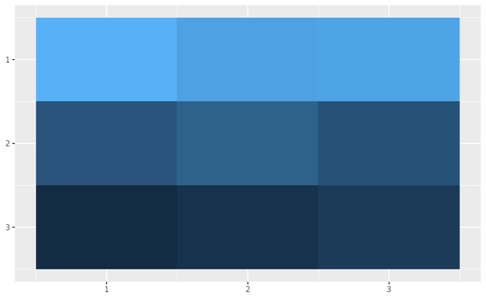

All state components are assumed to be column vectors. Additionally, will always denote the number of strata in the human population, the number of aquatic habitats and the number of patches.
We start with the fundamental matrix which is of dimension , where each column gives the distribution of time at risk for that strata over places (rows). If all strata are considered to be potentially at risk 100% of the time, then the columns will sum to one, which is the convention we will adopt for this document.
Then is the fraction of time that strata spends in patch .
Let be a length column vector giving the population size of each strata. Let be a length column vector giving the biting weights on each strata (the null value is ). We want to know , a length column vector which tells us how many people are at each patch (summing over all strata who are there).
Each element of then gives the total weighted person-time spent by all strata at that location.
The biting distribution matrix is a matrix which is central to formulating mathematically consistent models of bloodfeeding, and, by extension, consistent models of mosquito-borne pathogen transmission.
It is given mathematically as:
And it can be written out component-wise as:
Now we can get a clearer impression of what is. It is the probability a bite from mosquitoes in patch lands on any particular person in strata . Another way say this is that it is the proportion of person-time spent by a single person in strata at patch , out of all person-time spent at that patch.
If we wanted to look at a matrix whose columns sum to unity and elements give the probability of a bite taken on the ambient population in patch to land on strata , we could look at the following matrix:
This operation has the effect of multiplying each column in by the diagonal of of the matrix on the left, so that the columns sum to one (or the column sums of , in case the total time at risk is ).
Likewise if we want to recover , a matrix whose rows describe how each strata distributes its time across patches, one can simply multiply on the right by which has the effect of multiplying each column of by that element of the diagonal of .
Human transmitting capacity is a vector of length , each element of which gives the number of net infectious days for an infected individual in each strata. For the homogeneous SIS model, it is simply:
The parasite dispersal by mosquitoes matrix, is the spatial analogue to vectorial capacity, which is the expected number of humans infected per infected human, per day, assuming perfect transmission efficiency.
It can be understood by going from right to left. The matrix is a matrix, the diagonal giving the numbers of bloodmeals taken on each person in each patch, per day. Multiplying on the left by has the effect of multiplying each column of the matrix on the left by the corresponding element of the diagonal of the matrix on the right. That intermediate matrix will have columns which describe how those bites/person from each patch are distributed across other patches over the extrinsic incubation period, accounting for mortality during that period. The final multiplication on the left distributes those bites after the EIP has passed.
If we only have a single patch, the formula becomes:
Which is equivalent to (after substituting ) the classic formula from Smith and McKenzie (2004): .
We can first examine the multiplication of on the right. This has the effect of multiplying each column of by the diagonal of . This results in a matrix whose columns give the distribution of potentially transmitting person-time () a person in each strata contributes to a patch. It is a matrix.
On the left multiplies each column of by the diagonal of that matrix; this has the effect of recovering the original movement matrix . So multiplying the intermediate matrix produced by the preceding section by this on the left distributes that potentially-transmitting person time across patches. Therefore -th column of describes how potentially infectious person-time from a person infected in is distributed across other patches.
In the 1 patch, 1 strata case, it simplifies considerably to:
One way to look at parasite dispersal is to look at how parasites are dispersed through one parasite generation. This can be done with from mosquito to mosquito, or human to human. Below we show the equation for parasite dispersal through a generation, beginning and ending with a human host.
$$ \mathcal{R} = b \beta \cdot {\cal V} \cdot \mbox{diag}\left(W \right) \cdot \beta^T \cdot \mbox{diag}\left(DH\right) $$
Here is a matrix, the columns of which describe how infections starting in that strata are disseminated among other strata after one generation. Once again we can learn how to interpret the equation by walking from left to right. produces a matrix which describes how infectious person-time in each strata is spread across patches. Multiplication by then describes how this infectious person-time is transformed into potentially infectious bites by mosquitoes, distributed over space and accounting for mortality during the EIP. Final multiplication by and takes into account where persons will contact those infectious bites, and the transmission efficiency back to human hosts.
Once again, we can take the 1 patch, 1 strata case to see how this formula simplifies:
Which is precisely the formula for in Smith and McKenzie (2004). Therefore is the “logical” spatial version of this threshold metric.
If we track parasite dispersal from mosquitoes to mosquitoes we arrive at the matrix:
$$ \mathcal{Z} = e^{-\Omega\tau} \cdot \mbox{diag}\left( \frac{fq M}{W} \right) \cdot {\cal D} \cdot fq\Omega^{-1} $$ In the 1 patch 1 strata case this becomes the same equation as .
Here we demonstrate how to calculate these metrics using the 5-3-4 example.
l <- 5
p <- 3
n <- 4
calN <- matrix(
data = c(1,1,1,0,0,
0,0,0,1,1,
0,0,0,0,0),
nrow = p, ncol = l, byrow = TRUE
)
xi <- matrix(c(.7, .2, .1, .8, .2), 5, 1)
calU <- t(calN %*% diag(as.vector(xi)))
g <- rep(1/12, p)
sigma <- rep(1/12/2, p)
calK <- t(matrix(
c(c(0, .6, .3),
c(.4, 0, .7),
c(.6, .4, 0)), 3, 3))
f <- rep(1/3, p)
q <- rep(0.9, p)
tau <- 12
M <- rep(100, p)
Omega <- diag(g) + (diag(1,p)-calK) %*% diag(sigma)
Lambda <- Omega %*% M
H <- matrix(c(10,90, 100, 900), 4, 1)
X <- as.vector(0.2*H)
r <- rep(1/200, n)
b <- rep(0.55, n)
c <- c(0.1, .02, .1, .02)
calJ <- t(matrix(
c(c(0,0,0,0),
c(1,1,0,0),
c(0,0,1,1)), n, p
))
Theta <- t(matrix(
c(c(0.01,0.01,0.001,0.001),
c(.95,.92,.04,.02),
c(.04,.02,.959,.929)), n, p
))
W <- Theta %*% H
beta <- t(Theta) %*% diag_inverse(W)
D <- c/r
calV <- metric_calV(f = f, q = q, Omega = Omega, tau = tau, M = M, W = W)
calD <- metric_calD(W = W, beta = beta, b = b, D = D, H = H)
calR <- metric_calR(b = b, beta = beta, calV = calV, W = W, D = D, H = H)
calZ <- metric_calZ(Omega = Omega, tau = tau, f = f, q = q, M = M, W = W, calD = calD)We can visualize the matrices as heatmaps.
calV_df <- data.frame(
value = as.vector(calV),
x = rep(1:nrow(calV), times = nrow(calV)),
y = rep(1:nrow(calV), each = nrow(calV))
)
ggplot(calV_df, aes(x=x,y=y,fill=log(value))) +
geom_raster() +
scale_y_reverse() +
guides(fill = 'none') +
theme(axis.title = element_blank())